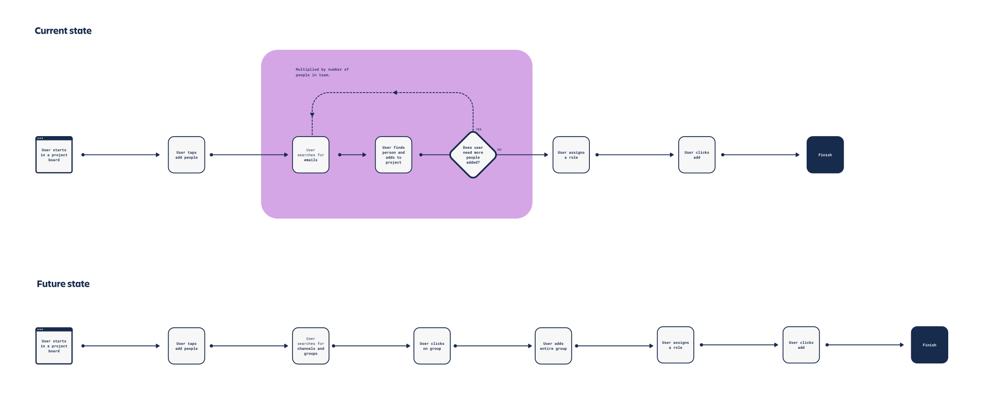

Work / Atlassian
Jira core invites
Invite flows were designed for individual invitations. It’s easy to find and invite one person, but the features fall short when inviting a group — and previous research suggested that people starting a new project or board tend to invite whole teams.

Problem
When a team manager needs to invite several or all of their team members, they often switch to tools like Slack to make sure no one is missed. Relying on memory for names and emails leads to mistakes.
How might we help users quickly find their team and feel confident they’re inviting the right people, while building a solution that scales across the Atlassian platform?



Solution
Once we understood the pain points in the current flow and the system’s limitations, I designed a solution using Atlassian Design System components, ensuring consistency and scalability across the platform.
We tested the solution with five Jira admins to validate usability, alignment and understanding of the key concepts. Their feedback was incorporated, and all changes were prioritised with Product Management to align with broader product goals.


Outcomes
With a Growth team mindset, we measured outcomes tied to the pain points identified across the Atlassian ecosystem. Key metrics included Monthly Active Users (MAU), which gave insight into retention and, compared with Daily Active Users (DAU), showed the frequency and consistency of engagement. We also tracked Direct Access (DA) — users joining teams via invitation rather than requesting access — as a signal of improved onboarding efficiency.
A/B test results
Conclusion. Low MAU with high DAU indicates a small but highly engaged segment that uses this feature frequently.
From an admin perspective, user management remains a significant burden, accounting for around 48% of activity in the admin portal (by visit volume, not time spent). From a user perspective, streamlining access approvals saved an estimated 8 hours of end-user time per tenant, and enabled an average of 2.5 additional users per site to gain access more efficiently.